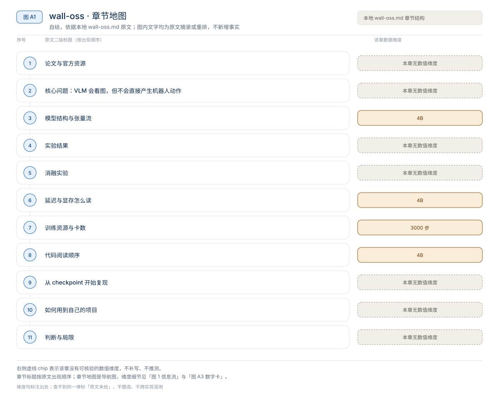
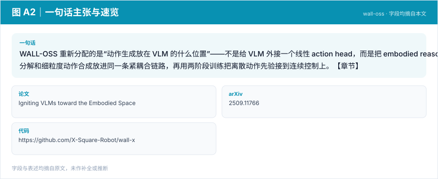
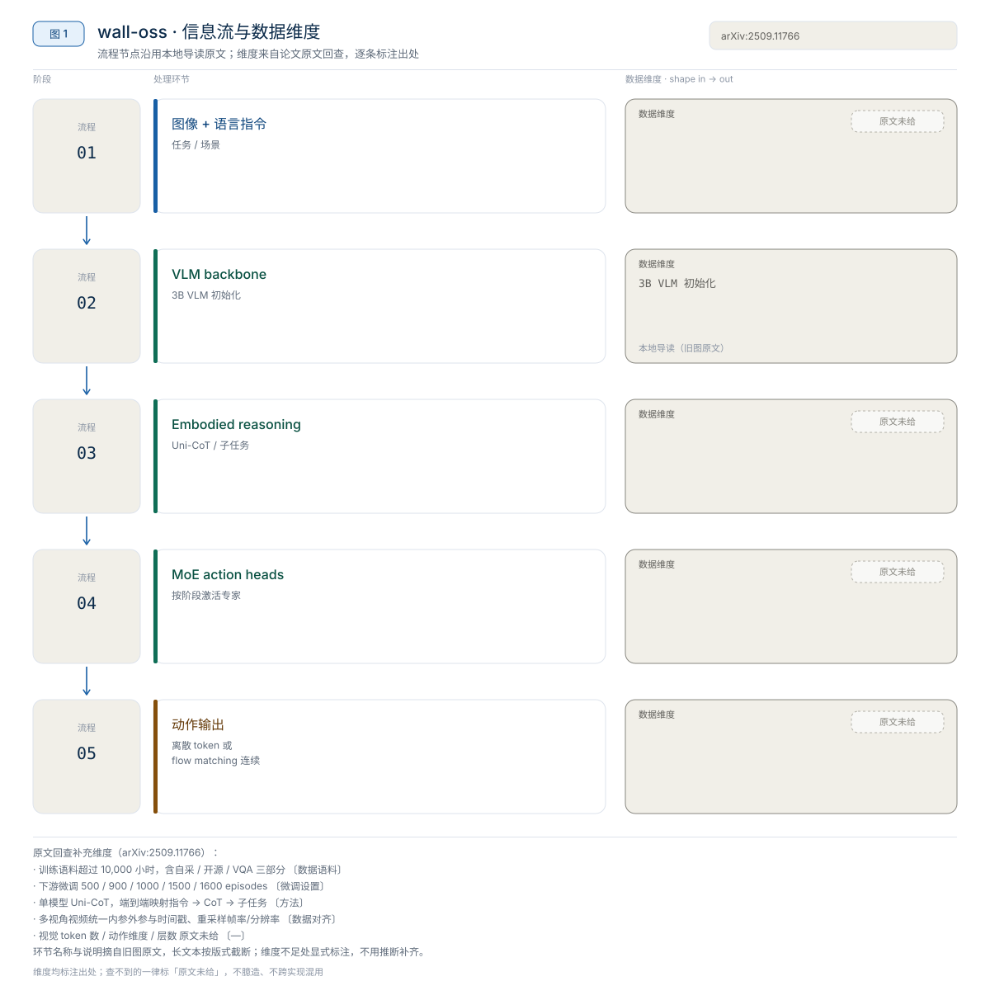
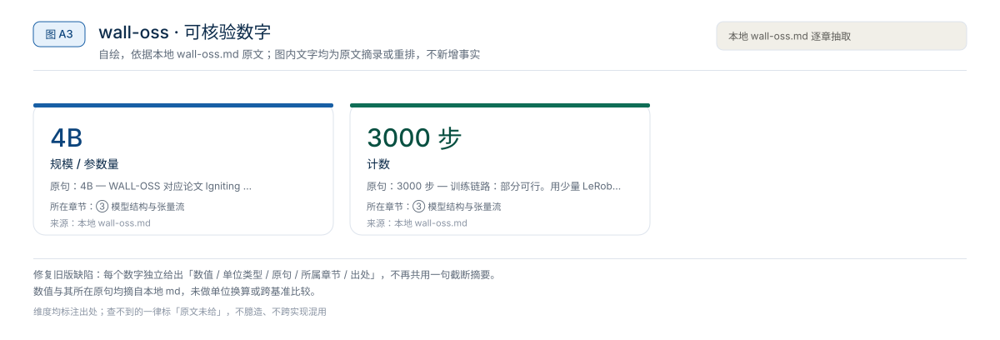
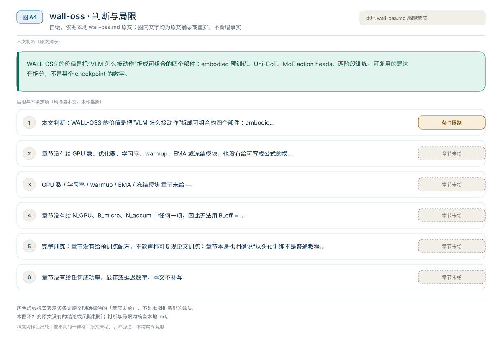

【VLA 精读 · 视觉 Backbone】EventVLA：把关键视觉证据存成原图，需要时再看一次
EventVLA 重新分配的是“历史信息存在哪里”这个接口——不是把历史压进模型隐状态，而是把少量原图关键帧存在 runtime 侧，等后续决策需要时再作为视觉输入看一次。【章节】
Backbone
WALL-OSS 重新分配的是“动作生成放在 VLM 的什么位置”——不是给 VLM 外接一个线性 action head，而是把 embodied reasoning、子任务分解和细粒度动作合成放进同一条紧耦合链路，再用两阶段训练把离散动作先验接到连续控制上。【章节】
原题与资源：Igniting VLMs toward the Embodied Space · arXiv:2509.11766 · 代码
一句话：WALL-OSS 重新分配的是“动作生成放在 VLM 的什么位置”——不是给 VLM 外接一个线性 action head，而是把 embodied reasoning、子任务分解和细粒度动作合成放进同一条紧耦合链路，再用两阶段训练把离散动作先验接到连续控制上。【章节】
阅读成本：正文约 8366 字 / 10 个章节 / 5 张图；目录按本文原有章节顺序排列，章节内容未改动。
目录（点击跳到对应章节）：

图 A1：本文章节地图（节点即原文 h2 标题）。自绘，依据本文，不新增事实。
WALL-OSS 对应论文 Igniting VLMs toward the Embodied Space，是 X Square Robot 的 WALL 生态里“模型层”的开源 release：把预训练 VLM 的视觉语言理解接到机器人动作空间，让同一个体系既做 embodied reasoning，又生成可执行动作。本地章节给出的可核验口径是：模型卡称 wall-oss-0.5 为 4B VLA（3B VLM backbone 加动作组件）、公开 4 个 checkpoint 变体（wall-oss-0.5、wall-oss-flow、wall-oss-flow-0.1、wall-oss-fast）、训练分 2 阶段（Inspiration / Integration）；LeRobot 示例命令用 steps=3000、batch_size=32。章节没有给任何成功率、显存或延迟数字，本文不补写。
来源约定：本文事实只取自本仓库 WALL-OSS 导读，没有用模型记忆补写论文细节。
标注约定：【章节】指本地导读自己的归纳；【章节转述】指导读对论文、LeRobot 文档、模型卡或官方 README 的转述。论文版本号与代码 commit 章节未给。
版本：arXiv 2509.11766（章节链接v1HTML）；章节观察日期 2026-06-29；代码 commit 章节未给；查阅日期 2026-11-01。
| 资源 | 入口 | 阅读用途 |
|---|---|---|
| 论文 | arXiv:2509.11766 | 方法、范式对比、训练管线与数据组成 |
| 源码 | X-Square-Robot/wall-x | WALL 系列官方工程栈；WALL-OSS 的后训练与推理入口 |
| 权重 | Hugging Face: x-square-robot；wall-oss-0.5、wall-oss-flow、wall-oss-fast | checkpoint 与模型卡；另有 wall-oss-flow-0.1，章节只给名称、未给链接 |
| 项目页 | 章节未给 | 本地章节没有出现论文项目页 |
| 官方文档 | LeRobot: WALL-OSS | policy.type=wall_x 的集成、后训练与评估说明 |
论文题目：Igniting VLMs toward the Embodied Space；arXiv：2509.11766；版本：章节引用 2509.11766v1；代码 commit：章节未给；查阅日期：2026-11-01。
版本提示：章节里的模型清单来自 WALL-X README 的当前列表，不是论文里的版本号。wall-oss-0.5 被模型卡称为 2026 版、更偏 deployment-ready；wall-oss-flow、wall-oss-flow-0.1、wall-oss-fast 是不同动作分支的 release。写教程或实验时不要把四个名字混写成一个“WALL-OSS”。

图 A2：一句话主张与速览字段。自绘，依据本文，不新增事实。
一句话：WALL-OSS 重新分配的是“动作生成放在 VLM 的什么位置”——不是给 VLM 外接一个线性 action head，而是把 embodied reasoning、子任务分解和细粒度动作合成放进同一条紧耦合链路，再用两阶段训练把离散动作先验接到连续控制上。【章节】

图 1：WALL-OSS 从视觉语言输入到动作输出的紧耦合信息流。自绘，依据本地导读；不是论文原图。
章节把“预训练 VLM 直接当策略”的缺口拆成四条：
对比主流路径：VLM 编码 + 外接 action head / 纯离散 action token / 纯连续 diffusion → 统一 VLA 框架（Uni-CoT + MoE action heads + 两阶段训练）。【章节转述】

图 A3：本文可核验的数字摘录。自绘，依据本文，不新增事实。
一个具体任务走一遍 · 本文可核验数字与字段速查（以下均摘自原文，未作推算）：
| 路线 | 做法 | 章节指出的风险 |
|---|---|---|
| 只接 action head | VLM 编码图文，外接小头预测动作 | 动作生成和语言推理耦合弱 |
| 离散 action token | 把连续动作离散成 token，用语言模型方式生成 | 容易牺牲控制精度 |
| 连续动作建模 | 用 diffusion / flow matching 预测连续动作 | 训练稳定性与 VLM prior 保留更难 |
WALL-OSS 的策略是把离散与连续都纳入考虑：先建立 embodied semantic-action association，再用连续控制分支支撑高频执行。【章节转述】这也是它区别于“单一路线”的地方。
| 模块 | 章节给出的作用 | 读代码时看什么 |
|---|---|---|
| Embodied perception-enhanced multimodal pretraining | 用视觉-语言-动作数据增强空间、因果和操作理解 | 预训练数据里动作数据与 VQA 的比例、视觉编码是否冻结 |
| Unified Cross-Level CoT / Uni-CoT | 把高层指令理解、子任务分解、细粒度动作合成放进连续链路 | CoT 是文本 token、隐状态还是两者混合；哪些层参与 |
| MoE action heads | 按任务阶段动态激活不同专家，支持离散或连续动作建模 | 专家数、路由依据、离散/连续分支如何切换 |
| Two-stage training | 先用离散动作先验增强语义-动作对齐，再用 flow matching 做连续控制 | 两阶段的切换点、第二阶段是否冻结第一阶段模块 |
章节转述 LeRobot 文档的两阶段写法：Inspiration 阶段注入离散动作先验，增强空间理解与语义-动作对齐，直观理解是先让模型知道“语言和操作阶段怎么对应”；Integration 阶段使用 flow matching 实现高频连续控制，再让模型输出可执行的连续动作。
这条路线承认 VLM 和机器人控制之间存在分布差异：VLM 的能力不等于动作能力，需要中间桥接。章节的判断是，它比直接在小数据上微调 action head 更稳。【章节】
章节列出四类数据：自采机器人动作数据、开源机器人动作数据、multimodal VQA / vision-language 数据，以及长时域操作、推理与指令跟随任务。【章节转述】
混训的动机是双向的：只用机器人动作数据，规模不够且容易冲坏 VLM 的图文理解；只用图文数据，又学不到可执行动作。章节据此解释为什么“从头预训练 WALL-OSS 不是普通教程项目”，更现实的是下载 checkpoint 做后训练。
章节没有引用任何 benchmark 名称、任务数、trials、种子或成功率，也没有给参数量实测、显存或延迟。因此本文不搭“模型 / 参数量 / 显存 / 延迟 / 成功率”对照表。【章节】
| 评测载体 | 章节给出的口径 | 章节未给 | 读法 |
|---|---|---|---|
| LIBERO（LeRobot / wall-x 入口） | 章节把 LIBERO 列为推荐评测环境之一 | suite 选择、任务数、trials、成功率 | 只能确认有入口，不能确认分数 |
| 自有 LeRobot 格式数据 | 后训练 + validation | 数据规模、训练步数、验证指标 | 只能做链路验证 |
| 真实机器人部署 | 章节提到 WALL-OSS-0.5 面向 deployment | 硬件、任务、演示数、测试次数 | 不能当作已复现的真机结果 |
| 论文实验 | 章节只让读方法图（图 2/3/4） | 所有定量结果 | 本文不转述未读到的数字 |
读法：这一章能支持的结论是“WALL-OSS 有可下载权重、可运行工程栈和 LeRobot 集成”，不是“WALL-OSS 在某个 benchmark 上达到某个分数”。如果要在自己的报告里写性能，必须回到论文或自己复测，并带上协议。
来源：本地 WALL-OSS 导读 §1、§8、§9。
章节没有给消融实验，也没有给任何消融数值。下表把章节声称的设计作用整理成“待核验清单”，不是论文消融表。
| 设计主张 | 章节声称的作用 | 章节是否给消融数值 | 复现时怎么验证 |
|---|---|---|---|
| 离散动作先验 | 增强空间理解与语义-动作对齐 | 未给 | 去掉 Inspiration 阶段，只做 flow matching 后训练，比成功率与收敛步数 |
| Uni-CoT | 把子任务分解与动作合成放进连续链路 | 未给 | 关闭 CoT 分支，比长时域任务完成率与语言跟随 |
| MoE action heads | 按任务阶段激活不同专家 | 未给 | 换成单专家，比参数量、延迟与多阶段任务成功率 |
| flow matching 连续控制 | 支撑高频连续动作 | 未给 | 与离散 token 解码对比控制平滑度、延迟与精度 |
| 多源数据混训 | 同时保住 VQA 能力与动作能力 | 未给 | 调整动作:VQA 比例，测动作成功率与 VQA 回退 |
读者该不该复用：章节的论证是设计层的，不是实验层的。可复用的是“先离散先验、再连续控制”的课程思路；是否值得照搬，要在自己的数据和本体上按上表逐项测。不要把这张表当成“作者已经证明”的结论。
来源：本地 WALL-OSS 导读 §3–§6。
章节没有给模型延迟、显存、控制频率或 action chunk 长度，只给了模型规模与示例运行配置。
| 项目 | 章节给出的值 | 口径 |
|---|---|---|
| 模型规模 | 4B VLA；3B VLM backbone + 动作组件 | 模型卡说法【章节转述】 |
| 预测模式 | --policy.prediction_mode=diffusion | LeRobot 示例命令，不是论文默认值 |
| 注意力实现 | --policy.attn_implementation=eager | 同上 |
| 运行设备 | --policy.device=cuda | 同上 |
| 延迟 / 显存 / 控制频率 | 章节未给 | — |
读法：
wall-oss-0.5 的描述，不是本文实测的参数量；3B VLM + 动作组件如何加到 4B，章节没有给逐项账本。prediction_mode=diffusion 与 attn_implementation=eager 来自示例命令，不能当成论文训练或部署的默认配置。1000 / 延迟 只说明策略调用频率，不等于动作执行频率或端到端反馈频率。来源：本地 WALL-OSS 导读 §7、§8。
章节没有给 GPU 数、优化器、学习率、warmup、EMA 或冻结模块，也没有给可写成公式的损失或维度定义；下面的数值全部来自 LeRobot 示例命令或模型卡，不是论文训练配方。
| 训练项目 | 章节给出的值 | 口径 |
|---|---|---|
| 阶段 1 | Inspiration：离散动作先验、语义-动作对齐 | 章节转述 LeRobot 文档 |
| 阶段 2 | Integration：flow matching 连续控制 | 同上 |
| 示例优化步数 | --steps=3000 | LeRobot 示例命令 |
| 示例 batch | --batch_size=32 | 同上 |
| 设备 | --policy.device=cuda | 同上 |
| 数据 | 自采动作 + 开源动作 + multimodal VQA + 长时域任务 | 章节转述论文数据组成 |
| GPU 数 / 学习率 / warmup / EMA / 冻结模块 | 章节未给 | — |
章节没有给 N_GPU、B_micro、N_accum 中任何一项，因此无法用 B_eff = N_GPU × B_micro × N_accum 反推有效 batch；batch_size=32 只是单条示例命令里的值，不能当成论文配方。
三级复现的可行性：
wall-oss-0.5 或 wall-oss-flow，按 LeRobot 或 wall-x 跑一次加载与单任务评估。来源：本地 WALL-OSS 导读 §5、§6、§8。
章节没有给 WALL-OSS 的模型文件路径；下表是章节给出的入口与阅读重点，具体路径需按固定 commit 核对。
| 顺序 | 路径 / 入口 | 阅读重点 |
|---|---|---|
| 1 | 论文图 2、图 3、图 4 | 范式对比、紧耦合架构、两阶段训练管线 |
| 2 | HF x-square-robot 模型卡 | 4B/3B 规模说法、各 checkpoint 的差异 |
| 3 | X-Square-Robot/wall-x | 官方工程栈；后训练、推理、评估入口 |
| 4 | LeRobot WALL-OSS 文档 | policy.type=wall_x 的配置与训练命令 |
| 5 | lerobot-train 参数 | dataset.repo_id、policy.pretrained_name_or_path、prediction_mode、attn_implementation |
| 6 | MoE action heads 实现 | 专家路由、离散/连续分支切换；路径章节未给 |
| 7 | Uni-CoT 实现 | CoT 在哪些层产生、如何条件动作；路径章节未给 |
| 8 | checkpoint 配置 | 动作维度、processor 与模型结构；路径章节未给 |
坑：
wall-oss-0.5、wall-oss-flow、wall-oss-flow-0.1、wall-oss-fast 是不同 release；教程里必须写清具体 checkpoint。steps=3000、batch_size=32 只是 LeRobot 文档示例，换 GPU 与数据集就要改。policy.pretrained_name_or_path 必须指向实际下载的那个 release，写错会把 FLOW 的配置套到 0.5 上。以下命令来自章节转述的 LeRobot 示例，未在本机验证；路径、checkpoint 名称与版本需按自己的环境替换。
# 示意；章节只给模型页链接，没有给逐字下载命令
huggingface-cli download x-square-robot/wall-oss-0.5 --local-dir /path/to/wall-oss-0.5
# 或 wall-oss-flow / wall-oss-fastlerobot-train \
--dataset.repo_id=your_dataset \
--policy.type=wall_x \
--output_dir=./outputs/wallx_training \
--job_name=wallx_training \
--policy.repo_id=your_repo_id \
--policy.pretrained_name_or_path=x-square-robot/wall-oss-flow \
--policy.prediction_mode=diffusion \
--policy.attn_implementation=eager \
--steps=3000 \
--policy.device=cuda \
--batch_size=32章节把这段命令定位为“方向指引”，不是承诺可直接复现的结果。运行前要按 GPU、数据集、LeRobot 版本和 checkpoint 名称调整。
想贴近官方工程栈，走 X-Square-Robot/wall-x；安装、YAML 配置与 policy server 的注意事项见 WALL-X 精读。
能证明：checkpoint 可下载、processor 可加载、LeRobot 数据可读、动作分支能前向、输出能保存。不能证明：任何 benchmark 成功率、真机可部署、论文训练可复现。
WALL-OSS 的价值是把“VLM 怎么接动作”拆成可组合的四个部件：embodied 预训练、Uni-CoT、MoE action heads、两阶段训练。可复用的是这套拆分，不是某个 checkpoint 的数字。
相关章节：WALL-X 精读、EventVLA 精读、WALL-OSS 导读、01 技术专题、02 论文与评测。
本文判断：WALL-OSS 的价值是把“VLM 怎么接动作”拆成可组合的四个部件：embodied 预训练、Uni-CoT、MoE action heads、两阶段训练。可复用的是这套拆分，不是某个 checkpoint 的数字。
局限与不确定项（以下均摘自本文，未作推断）：

图 A4：局限与不确定项摘录。自绘，依据本文，不新增事实。
覆盖范围：本页新增的导读、目录、章节地图、数字卡与局限清单，均为原文信息的重排或摘录；正文、数据与实验结论未改动。